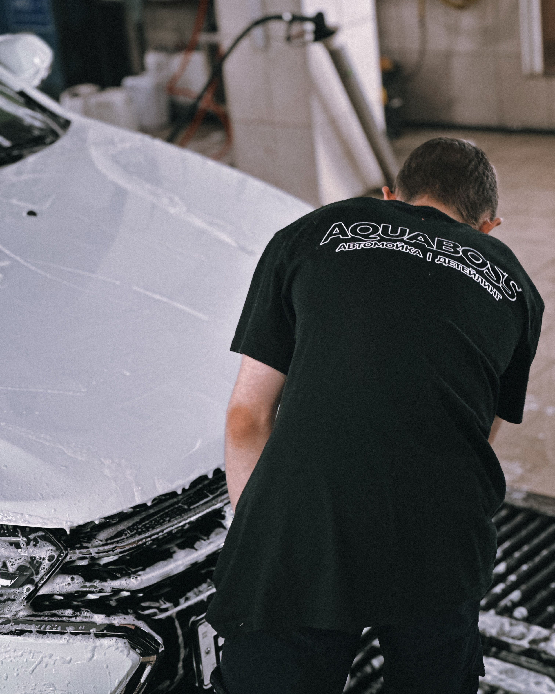
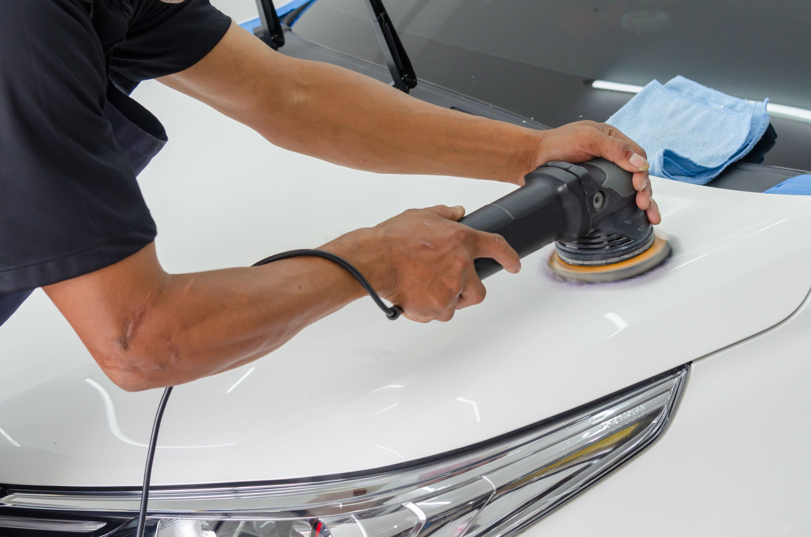
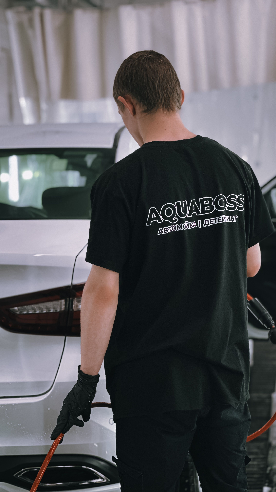

01 / ОСНОВНОЕ
Полная химчистка салона
Глубокая уборка салона с разбором или без — по состоянию и вашей задаче.
Обсудить объём работDETAIL DIMICH · ЕКАТЕРИНБУРГ
Бережная химчистка автомобиля профессиональной химией. Работаю с пятнами и запахами, а в процессе отправляю фотоотчёт.
01 / УСЛУГИ
Подбираю состав работ под состояние автомобиля. Перед началом обсудим задачу, а во время химчистки вы будете видеть, как идёт работа.

Глубокая уборка салона с разбором или без — по состоянию и вашей задаче.
Обсудить объём работРабота с различными видами загрязнений на тканевой и других поверхностях.
Рассказать о пятнеРазберёмся с источником запаха и подберём подходящий способ очистки салона.
Уточнить деталиПриведу салон в порядок перед продажей автомобиля.
Записаться02 / КАК Я РАБОТАЮ
Использую только профессиональную химию и работаю с разными видами загрязнений. По ходу процесса отправляю фотографии, чтобы вы видели результат.
 ДЕТАЛЬНЫЙ УХОД ЗА САЛОНОМ
ДЕТАЛЬНЫЙ УХОД ЗА САЛОНОМ03 / ЧИСТЫЙ РЕЗУЛЬТАТ
Подбираю подход к материалам салона и сообщаю о ходе работы.


Фотографии процесса иллюстративные и показывают пример детейлинг-работ.
04 / ПРОСТОЕ НАЧАЛО
Позвоните и опишите состояние салона.
Обсудим загрязнения, разбор салона и стоимость.
Покажу этапы работы и промежуточный результат.
Проверьте результат в студии.
05 / ОТЗЫВЫ КЛИЕНТОВ
Отзывы клиентов после химчистки салона.
Работать приятно с этим человеком. Приехал, отдал машину, буквально на следующие сутки машина была уже готова. Приятные цены, рекомендую
Наконец-то появилось время, чтобы сдать автомобиль на чистку салона. Сразу видно, что Дмитрий - человек опытный — сделал всё аккуратно и тщательно, периодически показывал промежуточные результаты. Сам салон теперь выглядит свежим, ковролин и сидения - как новые 👍 Сервис и результат на высоком уровне!
Сделали химчистку на высшем уровне
Все как надо
Рекомендую!!
Хочу от души поблагодарить ребят за работу! Сдал машину на детейлинг с полной химчисткой салона — сделали с разборкой: сиденья, ковролин, дверные карты, торпедо. Забрал — и не узнал салон! Словами не передать, выглядит как новый, всё идеально, ни пятнышка. Цена адекватная, договорились быстро, работа выполнена на совесть. Рекомендую от всей души!
06 / КОНТАКТЫ
Позвоните — расскажу, какой вариант химчистки подойдёт и когда можно приехать.
Позвонить и записаться